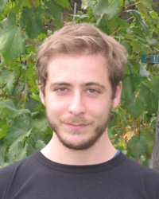

<div class="box post">
	
	<div class="inner">
            <h3>Luca Baldesi - Project Scientist</h3>
<p>
Luca Baldesi is a senior software engineer with <a href="https://www.apple.com/">Apple Inc.</a>, working on network frameworks for device connectivity.
<br>
He received a bachelor and a master degree in Computer Engineering from the <a href="https://unifi.it">University of Florence</a> in 2011 and 2013, respectively, and the PhD. degree in Computer Science from the <a href="https://unitn.it">University of Trento</a> in 2018.
He completed his scientific training in wireless Internet-of-Things at the <a href="https://www.northeastern.edu/">Northeastern University</a> and the <a href="https://wiot.northeastern.edu/">Institute for the wireless Internet-of-Things</a>, working on machine learning techniques operating at the network edge, and extending the <a href="https://github.com/open-sdr/openwifi">OpenWiFi</a> and <a href="https://www.srslte.com/">srsRAN</a> open projects.
He served as a project scientist with the <a href="https://properdata.eng.uci.edu/">ProperData Center</a> and the <a href="https://engineering.uci.edu/dept/eecs">EECS</a> department at the <a href="https://uci.edu/">University of California, Irvine</a>, researching in the areas of networking, Internet-of-Things, privacy, and embedded systems.
Luca has also held software R&D positions on Internet-of-Medical-Things with <a href="https://mindmaze.com/">Mindmaze</a> and with <a href="https://www.hamilton-medical.com">Hamilton Medical</a>, focusing on embedded systems (based on NXP and STM chipsets) for real-time signal processing and medical applications.
		</p>
<p>
                <a href="download/cv_baldesi.pdf">CV</a>
                -
                <a href="download/resume_baldesi_sw.pdf">Re&#769;sume&#769;</a>
</p>
	</div>
</div>
